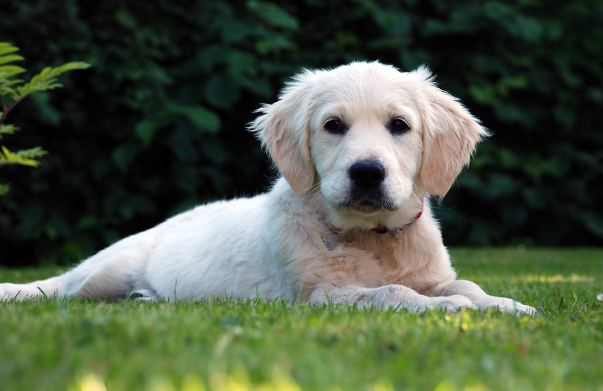
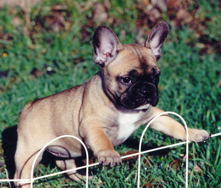

Learn about some of the world's most lovable dog breeds!

cc: Elizibeth Wieck
Golden Retrievers are friendly, intelligent, and loyal dogs. They are excellent family pets and love spending time with people. They are also known for being easy to train and very gentle.

cc: Mellisa Bodan
French Bulldogs are playful and affectionate. Their adorable bat-like ears make them easy to recognize. They enjoy relaxing with their owners and are great companions.
cc: Carlo Franko
Labrador Retrievers are energetic, friendly, and highly intelligent. They love outdoor activities and are one of the most popular family dogs in the world.
cc: Joyride Harness
German Shepherds are brave, confident, and very smart. They are known for their loyalty and are often used as service, rescue, and police dogs.
cc: Yasuhiko Ito
Poodles are elegant and extremely intelligent. They come in different sizes and are known for their curly coats and playful personalities.